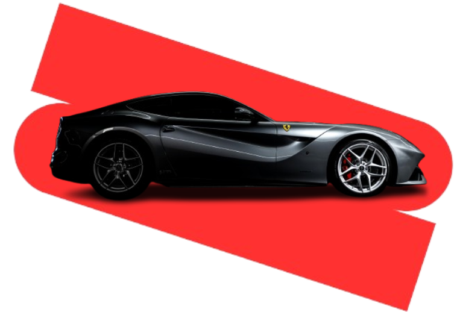

Проблема?
2MECHANIC всё быстро исправит!
2MECHANIC всё быстро исправит!

О Нас
Компания работает на территории графства Кент, охватывая всю зону Medway и прилегающие районы, включая Sittingbourne, Maidstone, Chatham, Gillingham и другие близлежащие города. Обслуживание доступно по всему региону, что обеспечивает быструю реакцию и удобный сервис для клиентов независимо от их местоположения. Также предоставляется услуга мобильного механика — квалифицированный специалист выезжает по адресу клиента, на место работы или поломки, выполняя диагностику, ремонт и техническое обслуживание на месте без необходимости посещения автосервиса.
Компания работает на территории графства Кент, охватывая всю зону Medway и прилегающие районы, включая Sittingbourne, Maidstone, Chatham, Gillingham и другие близлежащие города. Обслуживание доступно по всему региону, что обеспечивает быструю реакцию и удобный сервис для клиентов независимо от их местоположения. Также предоставляется услуга мобильного механика — квалифицированный специалист выезжает по адресу клиента, на место работы или поломки, выполняя диагностику, ремонт и техническое обслуживание на месте без необходимости посещения автосервиса.

Забор и возврат автомобиля
Услуга по забору и возврату автомобиля избавляет клиентов от необходимости оставлять машину в сервисе. Все ремонтные работы выполняются эффективно, и автомобиль возвращается в согласованные сроки, обеспечивая удобное и полностью беспроблемное обслуживание.
Услуга по забору и возврату автомобиля избавляет клиентов от необходимости оставлять машину в сервисе. Все ремонтные работы выполняются эффективно, и автомобиль возвращается в согласованные сроки, обеспечивая удобное и полностью беспроблемное обслуживание.

Легковые автомобили, грузовики и фургоны
Обслуживание осуществляется как для легковых автомобилей, так и для грузовиков и фургонов, включая личный и коммерческий транспорт различных типов. Профессиональная диагностика, техническое обслуживание и ремонт гарантируют надёжность, безопасность и долгий срок службы автомобиля. Независимо от характера проблемы, каждое транспортное средство получает внимательное и качественное обслуживание.
Обслуживание осуществляется как для легковых автомобилей, так и для грузовиков и фургонов, включая личный и коммерческий транспорт различных типов. Профессиональная диагностика, техническое обслуживание и ремонт гарантируют надёжность, безопасность и долгий срок службы автомобиля. Независимо от характера проблемы, каждое транспортное средство получает внимательное и качественное обслуживание.